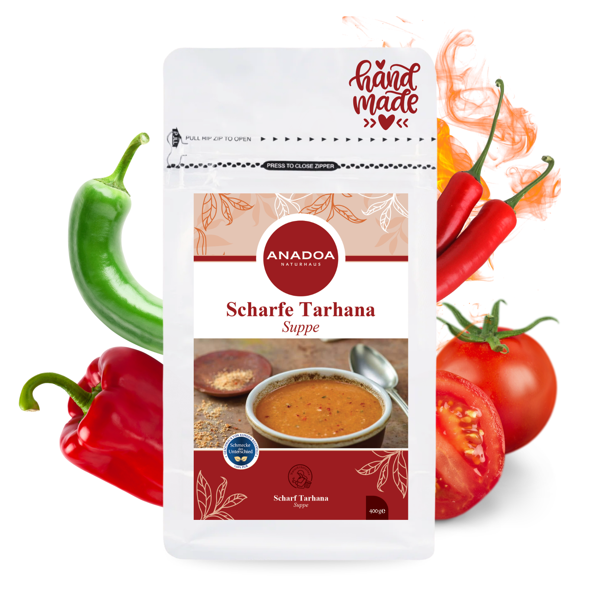

Scharfe Tarhana Suppe (Acılı)
Fermentiert mit Cayennepfeffer & Capia-Paprika nach südostanatolischem Rezept aus Gaziantep – warm, komplex und voller Charakter.
- Natürlich fermentiert – probiotisch & sättigend
- Echte anatolische Schärfe – nicht künstlich
- Ohne Geschmacksverstärker & Palmöl
- Ideal bei Erkältungen – schleimlösend

Was ist Acılı Tarhana (Scharfe Tarhana Suppe)?
Acılı Tarhana (türkisch: Acılı Tarhana Çorbası) ist die pikante Variante der traditionellen anatolischen Fermentationssuppe. Während die klassische Tarhana mild und cremig ist, bringt die Acılı-Variante Feuer: Cayennepfeffer, scharfe Capia-Paprika und rote Chilischoten werden bereits bei der Teigherstellung eingearbeitet, fermentieren mit und entfalten so eine einzigartige, tiefe Schärfe – ohne die Rohheit frischer Chili, stattdessen eine warme, komplexe Pikantwürze.
Für alle, die Tarhana kaufen und dabei ein echtes Geschmackserlebnis suchen: Dies ist die Originalversion aus dem heißen Südosten der Türkei.
Die Schärfe: Cayenne & Capia-Paprika
Die Schärfe der Acılı Tarhana ist vielschichtig – nicht brutal, sondern charaktervoll. Sie entsteht aus zwei Quellen:
- Cayennepfeffer (Capsaicin): Liefert die direkte Wärmeschärfe, die im Hals nachklingt. Capsaicin ist zudem stoffwechselaktivierend, entzündungshemmend und verbessert die Durchblutung.
- Rote Capia-Paprika: Die Grundlage des roten, tiefen Aromas. Capia-Paprika ist eine spezifische südostanatolische Paprikasorte, die süßlich, fleischig und stark ist – kaum vergleichbar mit Standard-Paprikapulver aus dem Supermarkt.
Durch die gemeinsame Fermentation mit dem Joghurt und dem Vollkornmehl verändert sich die Schärfe chemisch: Die scharfen Capsaicinoide binden sich an Fettsäuren aus dem Joghurt und werden dadurch runder, tiefer und anhaltender – statt aggressiv, warm und einladend.
Das Ergebnis ist eine Suppe, die sich anfühlt wie ein Kaminfeuer an einem kalten Januarabend in Gaziantep.
Herstellung: Fermentation mit Feuer
Der Fermentationsprozess der scharfen Tarhana ist identisch mit der klassischen Variante – nur mit dem entscheidenden Unterschied, dass die scharfen Zutaten von Beginn an Teil des Teiges sind:
- Zutaten rösten: Frische Tomaten, rote Capia-Paprika, grüne Spitzpaprika und ganze Chilischoten werden in der Glut geröstet, bis die Schalen aufplatzen – das konzentriert die Aromen und entwickelt Raucharomen.
- Teig kneten: Das Röstgemüse wird mit Schafsjoghurt, Weizenvollkornmehl, Kichererbsenmehl, Minze und Cayennepfeffer zu einem Teig geknetet.
- Fermentation (5–10 Tage): Milchsäurebakterien vermehren sich, die Schärfe wird durch Fettsäuren des Joghurts gebunden, das Aroma vertieft sich.
- Sonnentrocknung & Mahlen: Trocknen, mahlen, sieben – das fertige scharfe Tarhana-Pulver entsteht.
Gesundheitliche Vorteile der Acılı Tarhana
Die scharfe Variante bietet alle Vorteile der klassischen Tarhana – plus die Wirkungen von Capsaicin:
- Probiotika & Darmgesundheit: Wie bei jeder fermentierten Tarhana sind lebende Milchsäurebakterien enthalten, die Darmflora und Immunsystem stärken.
- Capsaicin – der Stoffwechsel-Booster: Capsaicin aktiviert TRPV1-Rezeptoren im Körper. Das erhöht die Wärmeproduktion (Thermogenese) und regt den Grundumsatz an – populär bekannt als „Fettverbrennung durch Schärfe".
- Schleimlösend bei Erkältungen: Heiße, scharfe Tarhana ist das anatolische Hausmittel Nr. 1 bei Erkältungen und Nebenhöhlenproblemen. Die Kombination aus Hitze, Dampf und Capsaicin befreit die Atemwege zuverlässig.
- Antientzündliche Wirkung: Capsaicin hemmt nachweislich entzündungsfördernde Zytokine. In Kombination mit den Antioxidantien aus Tomaten und Paprika ergibt sich eine synergistische antientzündliche Wirkung.
- Herz-Kreislauf: Studien zeigen, dass regelmäßiger Capsaicin-Konsum den Blutdruck senken und die Blutgefäße elastisch halten kann.
Herkunft: Gaziantep – Hauptstadt des anatolischen Geschmacks
Die Acılı Tarhana ist eine Spezialität Südostanatoliens, allen voran aus der Stadt Gaziantep – der kulinarischen Hauptstadt der Türkei, UNESCO-Kreativstadt der Gastronomie seit 2015. Gaziantep ist bekannt für seine leidenschaftliche Schärfe-Kultur: Rote Paprikapasten, getrocknete Chilischoten und Gewürzmischungen prägen die Küche der Stadt.
Die lokale Acılı Tarhana wird traditionell im Hochsommer hergestellt, wenn die roten Paprikas auf den Märkten von Gaziantep ihre intensivste Reife erreichen. Die Dachterrassen der Häuser sind dann mit getrockneten Tarhana-Stücken belegt – ein Anblick, der das Bild der Stadt prägt und der Duft, der die Gassen füllt, ist unverwechselbar.
Unsere Scharfe Tarhana folgt diesem südostanatolischen Rezept – produziert von lokalen Handwerkern in der Umgebung von Gaziantep, direkt für Sie nach Deutschland.
Zubereitung & Variationen
Grundrezept (2 Portionen):
- 3 EL Scharfe Tarhana in 200 ml kaltem Wasser 10 Minuten einweichen.
- In Topf: 1 EL Butter + 1 TL Olivenöl erhitzen. 1 Knoblauchzehe gepresst dazugeben, kurz anschwitzen.
- Eingeweichte Tarhana-Masse einrühren, 2 Minuten anbraten, 700 ml heißes Wasser einrühren.
- Aufkochen, dann 10 Minuten bei niedriger Hitze sämig köcheln lassen.
- Servieren mit: getrockneter Minze, Chiliflocken, Joghurt mit Knoblauch, frischem Petersil.
🌶️ Variation: Acılı Tarhana mit Lamm
Gebratenes Lammlendchen (kleingewürfelt) in den Topf geben, dann die Tarhana-Masse darübergeben und gemeinsam köcheln. Das ist die Festtagsvariante aus Gaziantep.
❄️ Variation: Erkältungs-Booster
Tarhana + 1 TL Kurkuma + 1 Prise schwarzer Pfeffer + 1 TL Honig + 2 Tropfen Schwarzkümmelöl. Heiß trinken. Das ist das anatolische Immunsystem-Protokoll.
Lagerung
Kühl, trocken und lichtgeschützt in einem luftdicht verschlossenen Behälter lagern. Hält sich 12–18 Monate. Die Schärfe intensiviert sich leicht, wenn das Pulver mit der Zeit trockener wird – das ist normal und erwünscht.
Inhaltsstoffe
Weizenvollkornmehl, Schafsjoghurt, Capia-Paprika, Minze, grüne Spitzpaprika, Cayennepfeffer, Kichererbsen, Bohnen, Milchrahm und Tomaten.
Enthält Gluten und Milch. Kann Spuren von Nüssen enthalten.
Häufig gestellte Fragen (FAQ)
Wie scharf
ist die Acılı Tarhana wirklich?
Die Schärfe ist merklich – aber nicht brutalisierend. Im deutschen Vergleich: Etwa vergleichbar mit einem mittelstarken türkischen Kebab mit Pul Biber. Wärme, die im Hals nachklingt, aber nicht überwältigt. Durch die Fermentation ist die Schärfe gerundet und tief – nicht roh und aggressiv.
Kann ich die
Schärfe beim Kochen reduzieren?
Ja. Einfach etwas mehr Wasser verwenden (8 statt 6 Tassen) und am Ende einen großzügigen Klecks Joghurt einrühren. Joghurt neutralisiert Capsaicin besonders effektiv – das ist kein Zufall, sondern anatolische Küchen-Weisheit.
Ist die
scharfe Tarhana gut bei Erkältungen?
Das ist die bevorzugte Variante! Capsaicin ist ein starkes Schleimlösungsmittel und erweitert die Atemwege. Kombiniert mit dem Dampf einer heißen Suppe und den probiotischen Kulturen aus der Fermentation ist Acılı Tarhana das umfassendste natürliche Erkältungsmittel der anatolischen Volksmedizin.